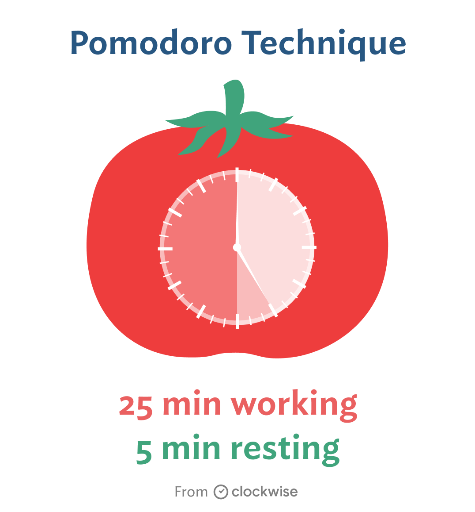
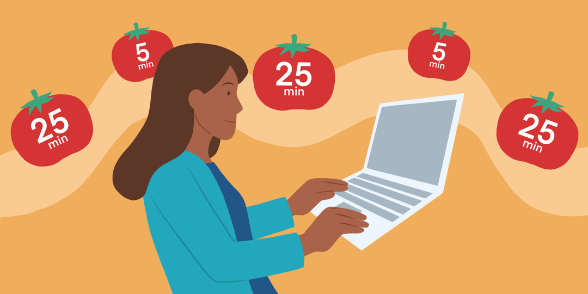
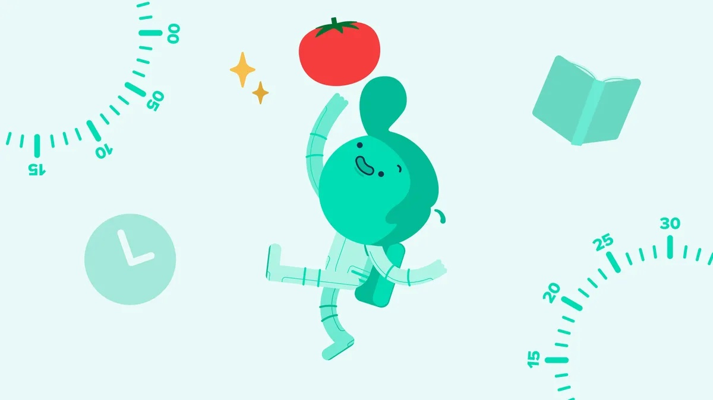
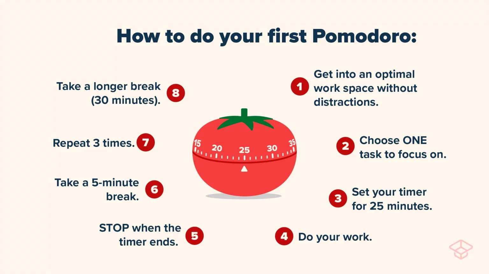

What is the Pomodoro Technique?




Francesco Cirillo developed the Pomodoro Technique in the 1980s when he was in college in Italy and struggling to study. He kept getting distracted and losing focus (and he didn't even have Instagram or TikTok), so he went looking for a way to keep his mind on track. Inspiration came from a small tomato-shaped kitchen timer. Cirillo started by setting it for 10 minutes and trying to just work for the 10 minutes until the timer rang. And it helped—he was instantly more productive, at least when the timer was running.